Apri la galleria completa dei grafici (PNG e PDF)
Propagazione continua indipendente. P = probabilità target; F = √P.
Durata fisica T = 104.7197551. T = 20 × tau_s; tau_s = pi/(2*g_ref) = 5.235987756, g_ref = 0.3.
Validazione numerica, raggiungimento del target e convergenza dell'ottimizzatore sono criteri distinti. Nessun risultato implica da solo un quantum speed limit.
Tabella CSV · Configurazione · Provenienza
| case | seed | cohort | P_target | F_root | purezza | validato | obiettivo_raggiunto | fluence_modulazione | banda99_peggiore | potenza_sopra_soglia | P_iniziale | P_CRAB | guadagno_GRAPE | iterazioni_GRAPE | gradiente_proiettato_iniziale | gradiente_proiettato_finale | max_fotoni | P_hold_min |
|---|---|---|---|---|---|---|---|---|---|---|---|---|---|---|---|---|---|---|
| 1q | 100 | random | 0.999175 | 0.999587 | 0.999103 | True | True | 50.1244 | 4.56 | 0.170312 | 1.5335e-06 | 1.54502e-05 | 0.999163 | 80 | 2.05459e-05 | 0.0016964 | 10.0039 | 0.0615402 |
| 1q | 101 | random | 0.999365 | 0.999683 | 0.99932 | True | True | 50.0643 | 4.68 | 0.221015 | 1.55554e-07 | 3.99737e-06 | 0.999355 | 80 | 5.2466e-06 | 0.000971769 | 10.0043 | 0.0614412 |
| 2q_normalized_independent | 100 | random | 0.998818 | 0.999409 | 0.9982 | True | True | 122.088 | 4.44 | 0.130271 | 2.8478e-08 | 3.95836e-08 | 0.998821 | 80 | 5.18105e-08 | 0.00114064 | 10.0226 | 0.0567316 |
| 2q_normalized_independent | 101 | random | 0.992281 | 0.996133 | 0.988941 | True | True | 203.934 | 4.56 | 0.0450621 | 5.68053e-09 | 1.67095e-08 | 0.992156 | 80 | 3.40404e-08 | 0.00349814 | 9.99877 | 0.0776519 |
Statistiche: {"count": 2, "probability_mean": 0.9992699138472364, "probability_std_population": 9.540545508734954e-05, "probability_median": 0.9992699138472364, "probability_min": 0.999174508392149, "probability_max": 0.9993653193023238, "numerically_valid_count": 2, "validated_goal_count": 2, "validated_goal_fraction": 1.0, "probability_q25": 0.9992222111196927, "probability_q75": 0.9993176165747801, "selection_bias_top_only": false}
Probabilità target senza modulazione: 0.00000000.
Controlli falliti: nessuno
DettagliMaximum number of function evaluations has been exceeded.; STOP: TOTAL NO. OF ITERATIONS REACHED LIMIT
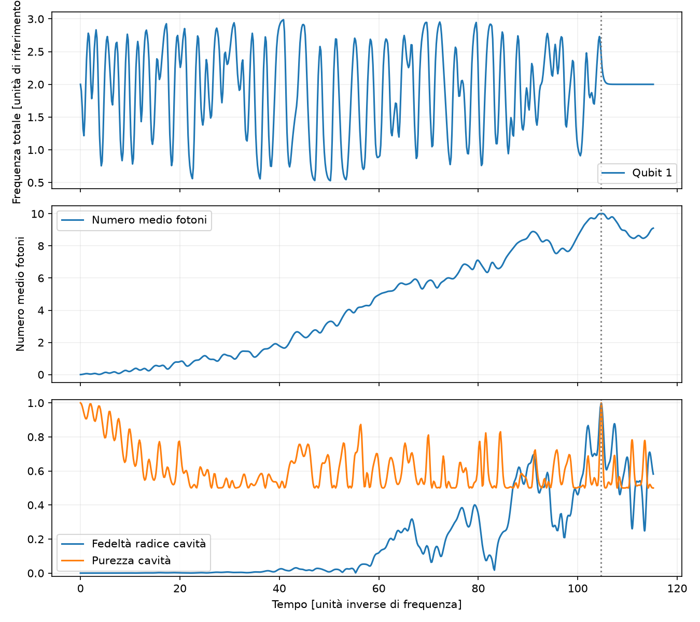
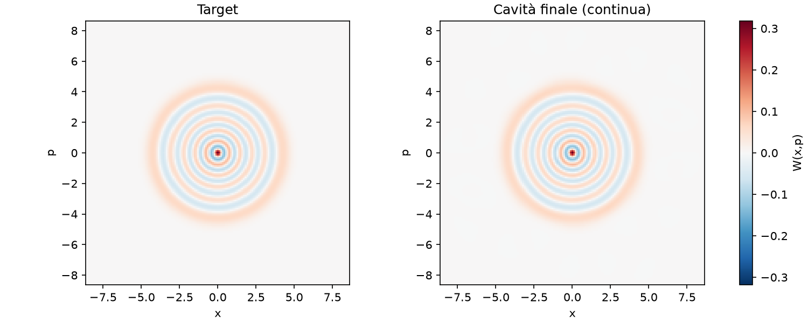
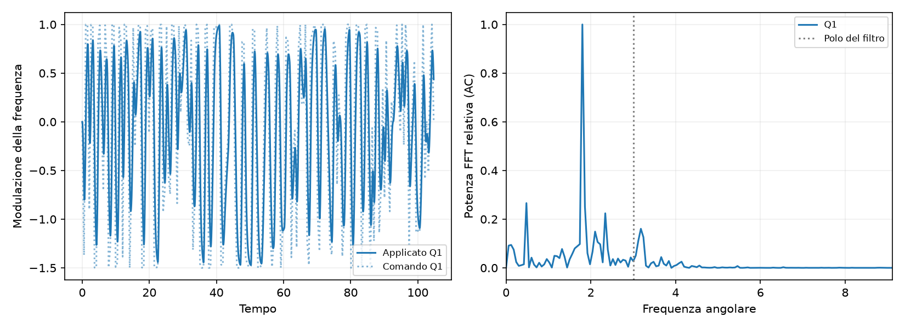
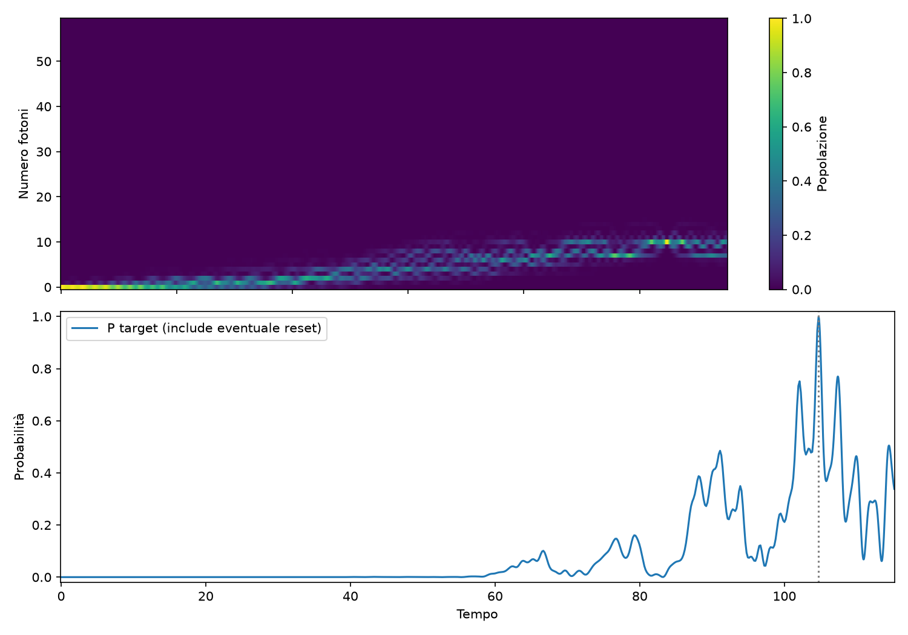
Controlli falliti: nessuno
DettagliMaximum number of function evaluations has been exceeded.; STOP: TOTAL NO. OF ITERATIONS REACHED LIMIT
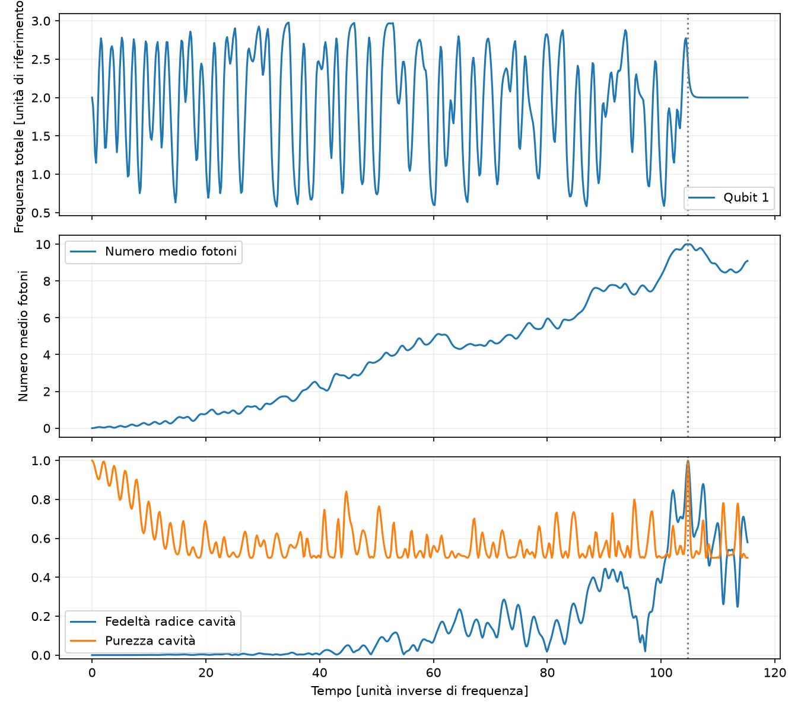
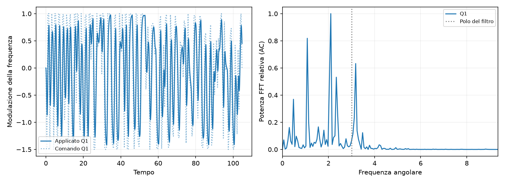
Statistiche: {"count": 2, "probability_mean": 0.995549339064535, "probability_std_population": 0.0032682865255490023, "probability_median": 0.995549339064535, "probability_min": 0.992281052538986, "probability_max": 0.998817625590084, "numerically_valid_count": 2, "validated_goal_count": 2, "validated_goal_fraction": 1.0, "probability_q25": 0.9939151958017605, "probability_q75": 0.9971834823273096, "selection_bias_top_only": false}
Probabilità target senza modulazione: 0.00000000.
Controlli falliti: nessuno
DettagliMaximum number of function evaluations has been exceeded.; STOP: TOTAL NO. OF ITERATIONS REACHED LIMIT
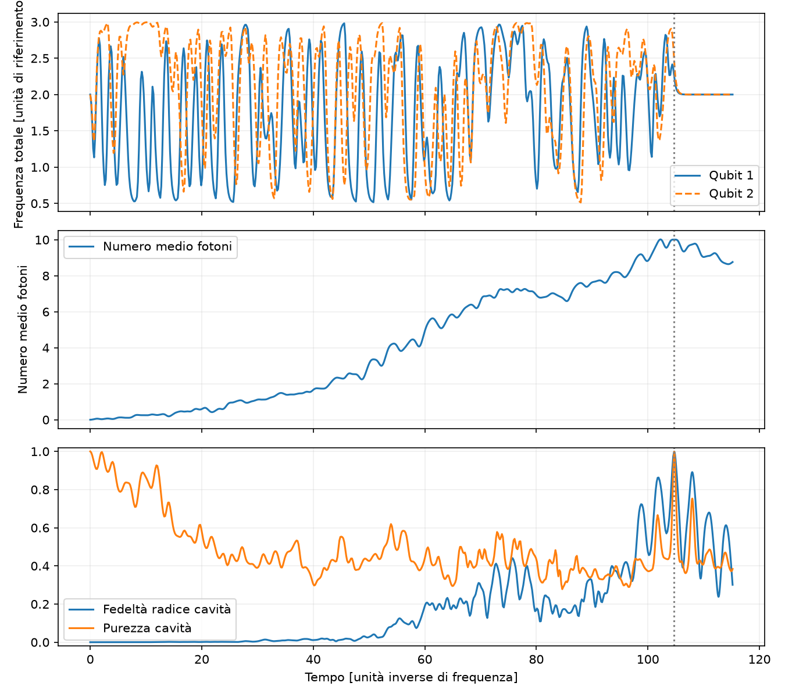
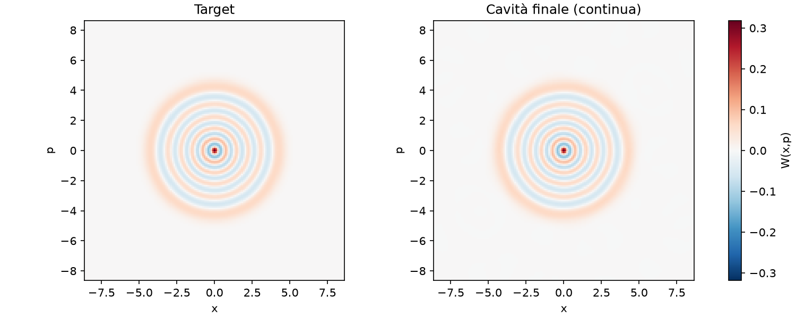
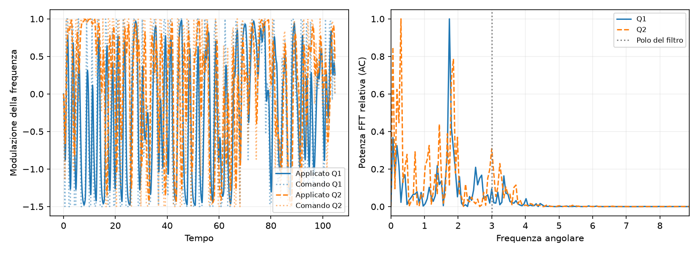
Controlli falliti: nessuno
DettagliMaximum number of function evaluations has been exceeded.; STOP: TOTAL NO. OF ITERATIONS REACHED LIMIT
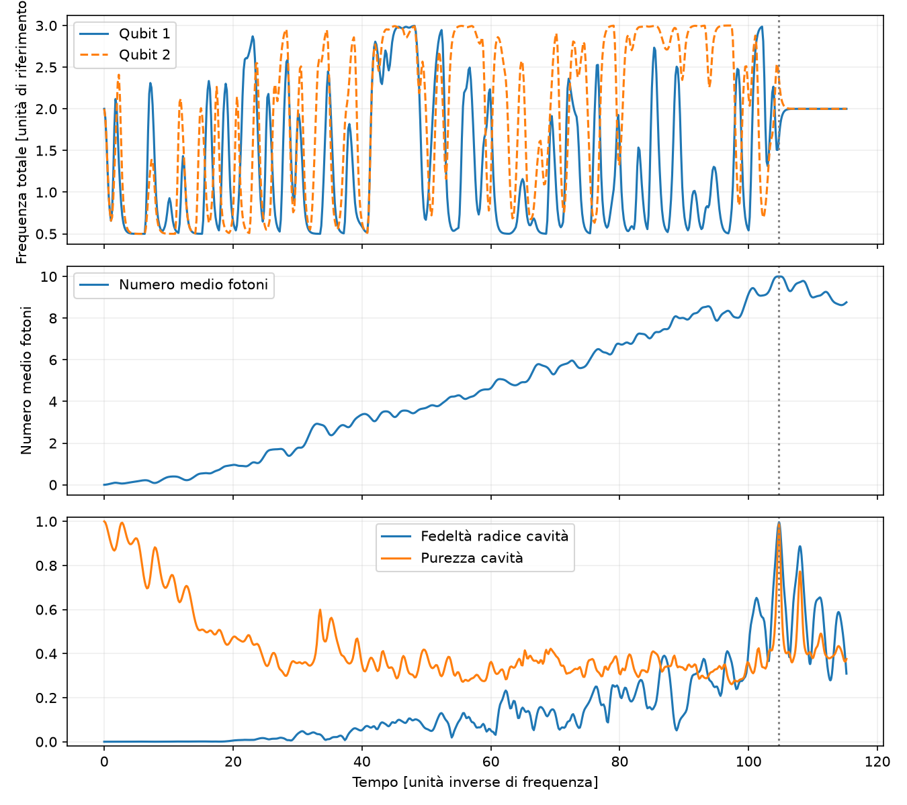
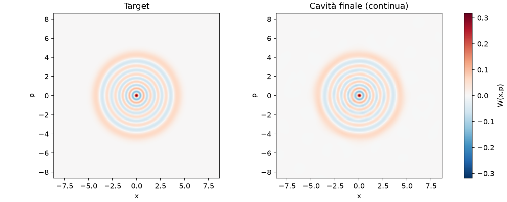
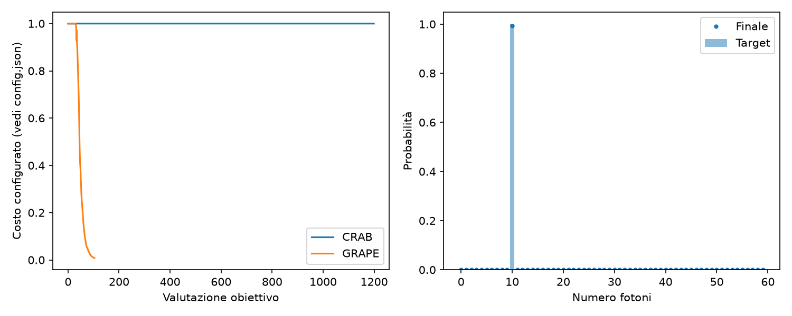
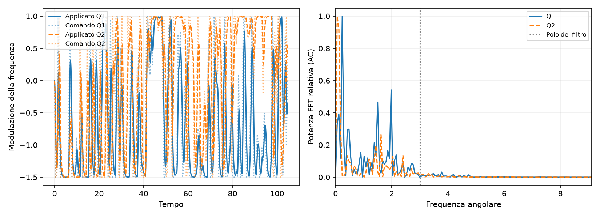
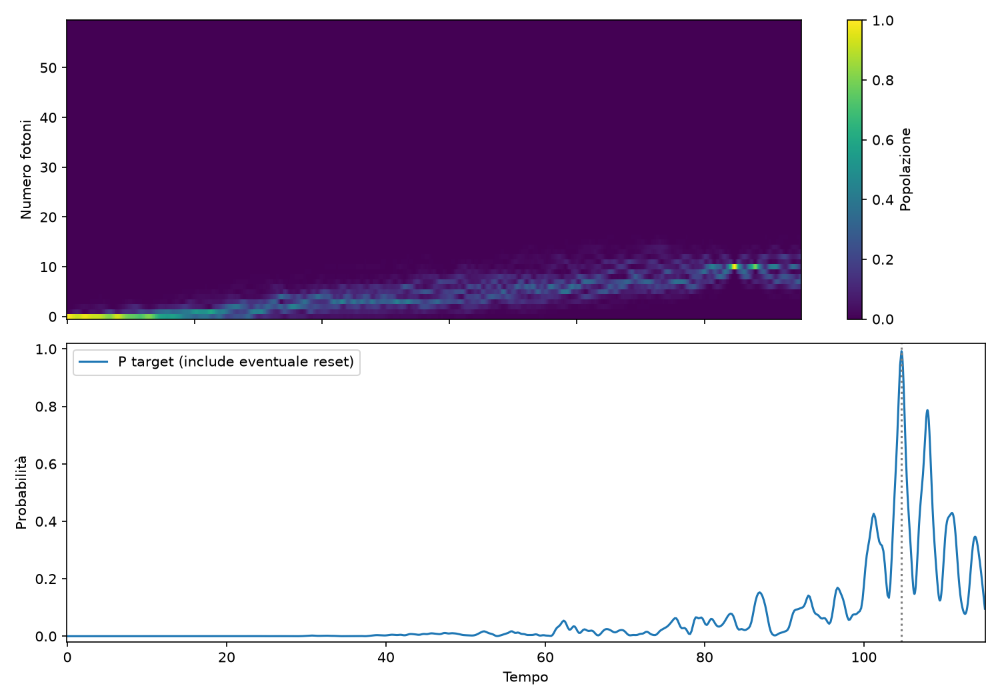